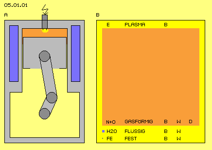
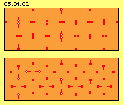
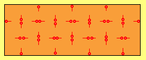
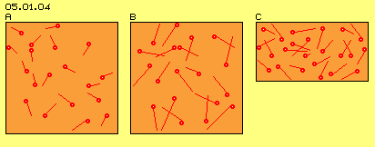
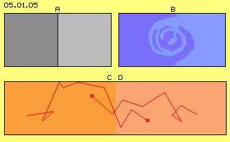
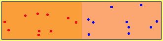
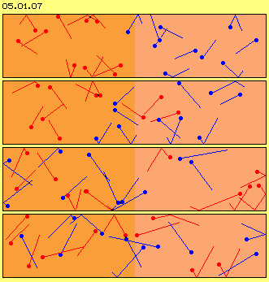
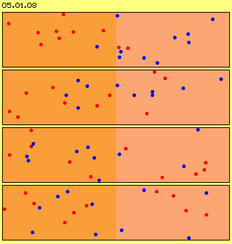

| Alfred Evert | 10.10.2006 |
05.01. Flight through Nothing, Structure within Chaos
Real World of Particles
The crank shaft turns within an engine block, the crank and a connecting rod are moving the piston up and down within a cylinder, the cubic capacity varies its volume, air is drawn in and compressed, fuel is injected and fired, heat comes up and presses down the piston, exhaust fumes are pushed off and the surplus heat is drawn off by coolant.
This machine uses materials of all three physical states: solid bodies (grey) for parts of the motor, liquids (blue) for cooling, gases (red) as throughput-medium - and above this, even fourth physical state of a plasma (yellow) might come up for short moment by the ignition spark.

However, again seven hundred times more volume takes the air (N+O) at normal conditions (red square). The air-atoms weight nearby like H2O, however are spread much wider. Gas-atoms are really negligible small in relation to the volume they demand - tiny points within a huge sea of Nothing - by common understanding. By my understanding however, the space is filled up with the aether (E) and also these material particles are nothing else than aether, each only as a special motion pattern of that plasma.
Motion, Heat, Density
The expression of speed resp. the intensity of particle movements is called ´heat´ (W, German Wärme). Atoms of solid bodies can tremble more or less intensive, e.g. from ´cold to red-hot iron´. Particles of liquids can move relative to each other, more or less fast, or even condensate or vaporize. Gas particles race through space most fast, or calm down becoming liquids. So ´heat´ is the expression of the intensity of the motion of particles - thus is not to apply at the partless aether plasma.
The universe is assumed to be extremely cold, however only because out there are very very few material particles to hit onto a thermometer. Light races through the universe - however that ´electromagnetic wave´ is not ´warm´. Only if light hits onto material particles their trembling might increase. So heat resp. temperature exists only at the level of material occurrences and also there it appears only by ´interaction´, i.e. if the intensity of movements of particles are exchanged. All processes within the the aether itself, e.g. previous light-radiation or also the vortices pattern of electrons are movements indeed, however that interaction-conditioned term of heat does not match. The aether by itself has no temperature (and thus also the Free Aether of the universe shows no temperature).
Analogue is the situation concerning the term of ´density´ (D). Really variable density exists only at gases, e.g. within the cylinder of previous combustion engine. Liquids show different density based on temperature, the liquids however are not really compressible. Likely behave solid bodies with its nearby steady density, just because their atoms or molecules are near next to the other, already by normal conditions. The smaller and denser the particles are, the less can vary the relative density - and thus the term of ´density´ is not to apply at the gapless plasma: the aether is a homogenous substance without any possibility for changing its density.
Strange Ideas
My aether thus shows no property of any ´elasticity´ and occurrences are not based at any ´dilution or thickening or condensation´ of any compressible substance, like often assumed at many theories. These theories talk about ´crystallization of vacuum´ or ´virtual particles´ - without any explanation how and why resp. only to cover unsolved problems of these world-views.

At picture 05.01.02 is marked an area of gas by light red colour. the red points represent atoms. The red line of each atom marks the way moved before. This picture shows no real relations: much too many atoms are arranged at that area, the atoms never show this strict order, the atoms do not move only at these vertical and horizontal tracks.
So this picture, like the following animation, only demonstrates how atoms of gases can move at ways through each others and how they collide repeatedly, mutually or at the surrounding walls. It´s common understanding, these collisions occur ´perfect elastically´ (thus without loss of kinetic energy), but the speeds and directions are only exchanged from one particle to the next particle (represented here by lines of same lengths resp. likely distances at each time unit).
This picture also corresponds to common understanding, as motions straight line and constant speed are assumed. However, not all particles show exact same speed but only similar speeds (by bell-shaped spreading). It´s also assumed, particles of gases show no attracting nor rejecting affects (besides polarized particles, e.g. the ´mixture of gases H2 and O´ resulting a liquid state).

Emptiness within Gases
´Nordic-Walking´ is up-to-date and thus many health-conscious walkers assemble at vast plane. As pure nature is boring, an ´event´ is arranged: all members spread out at a field and on command, everyone starts walking into directions as they like it, however all times straight ahead. ´Score-surface´ is one square-meter and at each hitting, partners exchange their directions. The aim of that event is ... however events became an end in themselves.
Anyway, some walkers meet a colleague already some few steps later, other walkers collide finally after some hundred meters or even later. The aim of this comparison is to demonstrate the ´emptiness´ of gases. At normal conditions, atoms move one thousand times their diameters straight ahead until next collion. As ´score-surface´ here is defined by one square-meter, the walkers on average would have to walk one kilometre until meeting next parner - and probably no series of that boring event would come up - and it´s rather hard to understand, why gas-particles don´t stop their stupid racing through the void.

Right side at C now the available space for given number of atoms is reduced. The atoms thus hit early and quite frequent onto the walls, resulting increased ´pressure´. At previous piston engine, the available volume is reduced when the piston moves into the cylinder. That moving ´wall´ rejects the atoms faster and the heat increases same time.
So, I used simple examples in order to demonstrate the reality of ´nearby empty´ gases (because atom-diameters of 10^-10 and distances of 10^-7 hardly can produce a real imagination). These facts are well known for long times, specialists know all relevant terms and formula. So I mentioned these facts only in brief, only by common words and simple examples to give an idea of real relations and processes within gases - and because not everything is like it seams and common sciences don´t draw all consequences or don´t draw best benefits of (for example see absolutely insufficient level of utilization of combustion engines).
Mixture 
At B are sketched two liquids (dark blue and light blue). Compounds of liquid-particles are not thus rigid, but particles remain next to neighbours as a rule. Liquids can be stirred (like sketched here) or can be shaked for mixing up.
At C and D are sketched two gases within two areas (dark red and light red). Two particles and their potential tracks are marked. Within gases exists such a wide emptiness and the particles move ´chaotic´, so they must not stay near neighbours all times (like at previous extreme schematic picture 05.01.02).
Scents for example spread remarkable fast and small mass of is sufficient for immediate detection within a wide room (e.g. if a diva with her exotic perfume enters the stage). Strong kinetic forces are ´inherent´ at gases and very dynamic processes occur. Different gases mix up rather fast and completely, autonomous without external intervention (like previous stirring of liquids).

One must really concentrate to detect the wandering of the particles. The process is much easier to realize by a follow of still frames. Picture 05.01.07 thus shows four phases of motion process, picture 05.01.08 shows four (other) phases with each position of red and blue particles.
Even this ´airspace is absolutely overcrowded´, the first particles reach the other end already after few ´moves´ (at this example after eight). The mixture is completed after short time (here e.g. red and blue particles are spread likely within both halves after twelve moves). Never ever the particles will be divided like at the beginning.

In spite of equal spreading by a total view, thus at every moment exist structures in shape of accumulations of particles and corresponding empty areas. Each structure however is dynamic, i.e. existing only intermediately and of varying shape. Opposite to generally known stabile structures of solid bodies (e.g. previous engine), these structures are changing and transient, nevertheless permanently existing.
The motion directions at the very beginning were arranged randomly (´chaotic´), however this chaos does not last long time. Very conspicuous are situations where some particles move rather parallel, even narrow aside each other. So locally much ´kinetic energy´ is assembled, even with likely structured movements. Just at these areas of ´well ordered motions´ the particles are crowded and thus building area of increased ´density´ (and correspondingly other areas intermediately show much less density).
We know well, the particles of solid bodies show a compact order, e.g. arranged by grid-structures. We also know, the particles of liquids are near next by relative constant distances (even at liquids already clusters are dominant). We know gases behave ´chaotic´ because its particles fly confusing all around and collide all times into all directions. Nevertheless our imagination of chaos is much too ´rigid´.

Essential characteristic of coincidence and chaos however is, equal spreading is never present, so in gases the distances between particles are never likely and the directions of movements are not totally different but likely at some areas. Opposite, based on coincidence and chaos it´s inevitable, an imbalance exists continuously, concerning momentary spreading of particle positions like their movement directions. Only by total view might result the apparent state of ´average´ occurrences.
In reality, the chaos and coincidence are characterized by dynamic structures. Well, we are handling ´stabile structures of solid particles´ day-in day-out and thus we do hard with structures of permanent changes (see confusing animation upside). Nevertheless these motions structures are as real as ´solid bodies´, even they come up at changing locations and by changing shapes.
Factor of Order
The ´First principles of thermodynamics´ however tell, all processes show losses, lastly by heat, this minor energy produces entropy, so the universe will die the heat-death and before that event won´t exist any chance for perpetuum mobile. That entropy does not exist, neither within the universe nor within a ´closed system´ of any gas-tank. Admitted, it´s hard to handle these changing structures or even to use the kinetic energy inherent of gases. Previous hint concerning the ordering function of tank-walls for example points to some possibilities (discussed at later chapters).
Following section primary talks about well known world of particles and only some differences to the difficult world of the aether are mentioned. At first some known and banal facts are listed, which however become important at following chapters. Our experienced world exists of parts which we handle steady and manifold, e.g. by building machines. At picture 05.01.01 (left at A) very schematic is shown a cross-sectional view through a popular construction - the combustion motor.
Motion (B, German Bewegung) is common for all physical states. Plasma is pure aether movement, atoms of gases are flying steady through space, liquids are soft and pushed down by gravity every slight slope, stationary solid bodies seam resting, however their atoms are trembling on and on. So the materia of all physical states thus is steady moving, from solid via liquid to gaseous, however at increasing larger distances. The plasma resp. the aether as common background of all occurrences naturally is also steady moving - however keeping nearby stationary (thus similar to the ´stationary´ trembling of solid bodies).
So I underline once more, the terms ´heat´ and ´density´ are inapplicable to ´my´ part- and gapless aether. Heat naturally is also not applied at diverse physical fields, i.e. electric- or magnetic- or gravity-fields are neither cold nor warm. The density sometimes is used concerning fields, however fields describe forces, so ´strength´ would better fit than density. So there are physical occurrences which also don´t show properties of heat and density (just because previous fields are direct affects of aether movements, without building independent and locally separated entities of material kind).
At the following are discussed only the gases, because their particles have best chance for free motions and, same time, the inevitably occurring effects clearly become obvious.
Picture 05.01.04 at A shows some more realistic relations concerning ´chaotic´ directions into which the atoms are moving this very moment. Completely unrealistic however still is the density of atoms (the relation between atom-diameters and total area drawn here). Real relations are not to show at paper or screen, but following example might give good idea.
Picture 05.01.04 at B schematic shows increased heat (in comparison with A). Atoms move some faster, thus they are hitting stronger at the walls and resulting some heavier trembling. Opposite, if the walls are warmed up, naturally the gas becomes heated correspondingly - inevitably every ´heat flows from warm to cold´ - like generally known (resulting increased entropy).
The process of merging not only occurs at the border of both areas, but some particles ´fall´ into randomly free spaces far ahead. Remarkable is, the particles are not spread equal at that face, but ´clusters´ come up all times, however with changing members and steady changing structures. Likely remarkable are ´bubbles of total void´ coming up correspondingly, which naturally are not steady and not resting stationary.
Admitted: these examples show little bit too much order - because the narrow walls work as a ´factor of order´. The particles are reflected at these walls like mutually by other particles, however not anywhere in the space but exactly at this straight line along the walls. In principle however, also gases not limited by solid borders show uneven spreading, thus different space between particles and accordingly momentary preferred direction of motions (and a view into the universe is convincing example).
05.02. Three Times Suction-Effect
Fluid-Technology - Basics